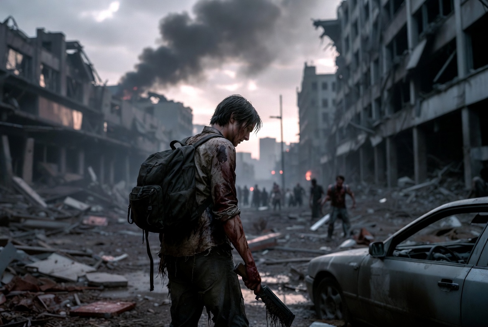

Humano
Humanos sobrevivem com equipamento, adaptação e organização. Podem recrutar NPCs armados para seus clãs, rastrear localizações e manusear água benta. Bandagens comuns curam conforme a quantidade utilizada. A bandagem premium oferece cura imediata e completa.
Ver hierarquia, fraquezas e como escolher
- Hierarquia prevista
- Sobrevivente → Corredor → Líder → Líder Master
- Fraquezas descritas no WORLD
- Vulnerável a armas cortantes e de disparo.
- Como aderir
- Escolha permanecer humano ou conclua a missão de classe, conforme as regras previstas.
- Cenário de missão previsto
- Zona Morta
- Como ganhar XP
- Combate, resgate de civis, eliminação de criaturas e missões.
Habilidades e limitações em avaliação
Habilidades previstas
- Versatilidade Tática: Acesso a múltiplos estilos de combate e equipamentos
- Progressão por Missões: Desbloqueio de facções através de missões específicas
- Adaptação Tecnológica: Uso eficiente de equipamentos modernos e veículos
- Diplomacia: Bônus em interações com NPCs e outras facções
- Resiliência: Recuperação acelerada e resistência a efeitos ambientais
Limitações em avaliação
- Sem poderes sobrenaturais inatos
- Dependente de equipamentos e tecnologia
- Vulnerável a efeitos Therium sem proteção
- Progressão mais lenta inicialmente
- Limitado contra criaturas de alto nível